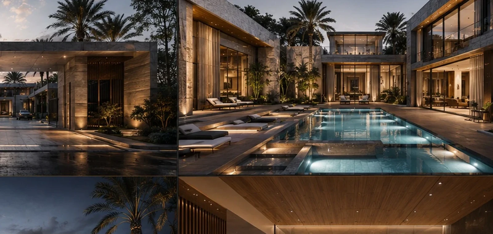
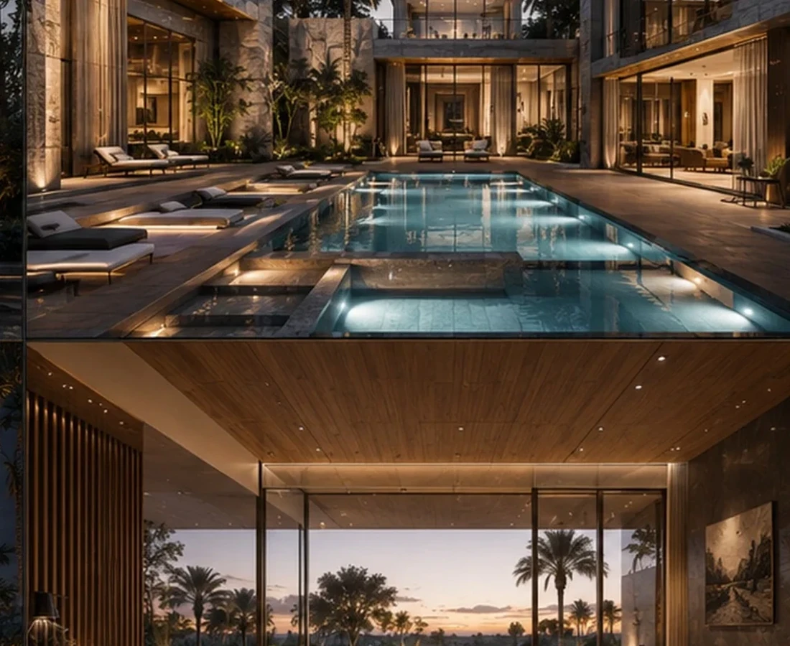
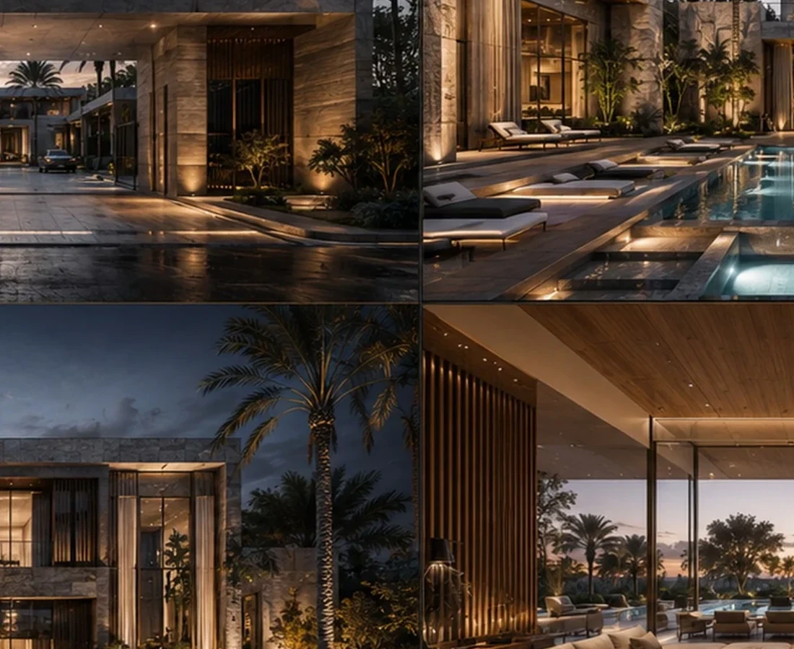

A project identity shaped by place, typology and experience.
The design language balances generous glazing with shaded outdoor living and a calm material palette, creating a premium residential experience without losing domestic scale.
Project narrative is based on the supplied BADR portfolio record and visible design material.



A New Development Opportunity
Your site deserves a product strategy before it becomes a drawing package.